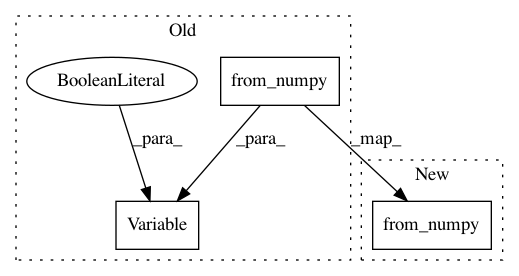

d4e0279e78d4410d7bfb5eb82211820cb5d63f7e,tests/test_autograd.py,,test_minibatch_unit_variance_mlpg_gradcheck,#,119
Before Change
// Target
y = G.mlpg(means.numpy(), np.ones(static_dim * len(windows)), windows)
y = Variable(torch.from_numpy(y), requires_grad=False)
y_expanded = y.expand(batch_size, y.size(0), y.size(1))
// Pack into variables
means = Variable(means, requires_grad=True)
After Change
// Target
y = G.mlpg(means.numpy(), np.ones(static_dim * len(windows)), windows)
y = torch.from_numpy(y)
y_expanded = y.expand(batch_size, y.size(0), y.size(1))
means.requires_grad = True
means_expanded.requires_grad = True
In pattern: SUPERPATTERN
Frequency: 3
Non-data size: 3
Instances
Project Name: r9y9/nnmnkwii
Commit Name: d4e0279e78d4410d7bfb5eb82211820cb5d63f7e
Time: 2018-12-24
Author: zryuichi@gmail.com
File Name: tests/test_autograd.py
Class Name:
Method Name: test_minibatch_unit_variance_mlpg_gradcheck
Project Name: r9y9/nnmnkwii
Commit Name: d4e0279e78d4410d7bfb5eb82211820cb5d63f7e
Time: 2018-12-24
Author: zryuichi@gmail.com
File Name: tests/test_autograd.py
Class Name:
Method Name: test_functional_mlpg
Project Name: r9y9/nnmnkwii
Commit Name: d4e0279e78d4410d7bfb5eb82211820cb5d63f7e
Time: 2018-12-24
Author: zryuichi@gmail.com
File Name: tests/test_autograd.py
Class Name:
Method Name: test_unit_variance_mlpg_gradcheck